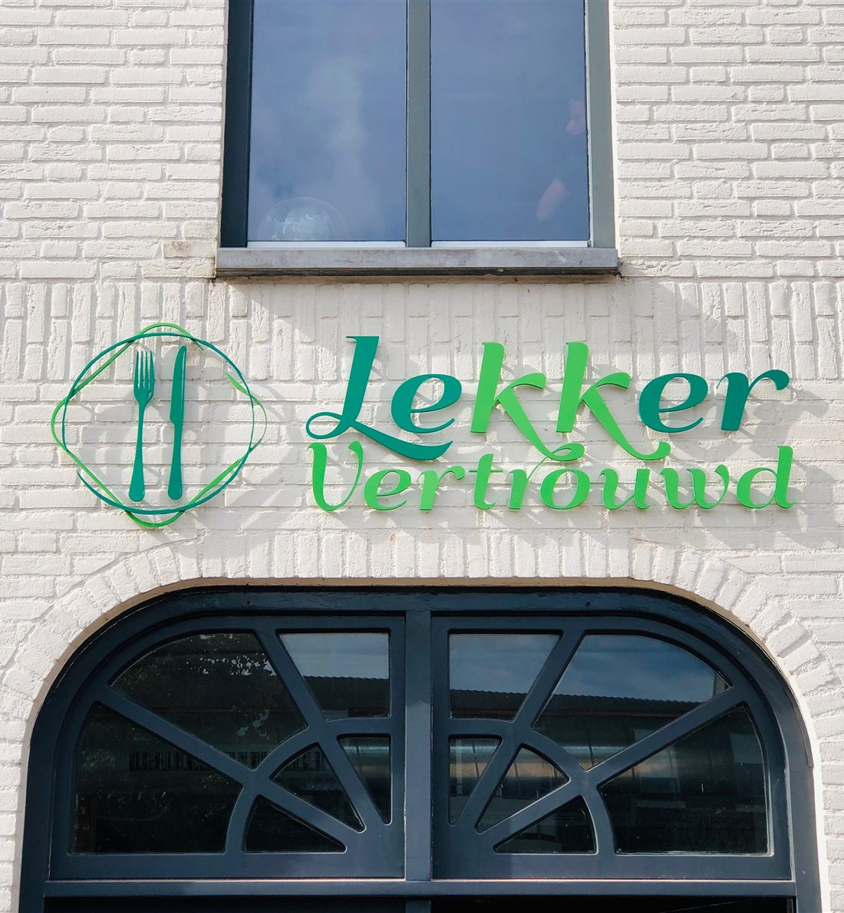
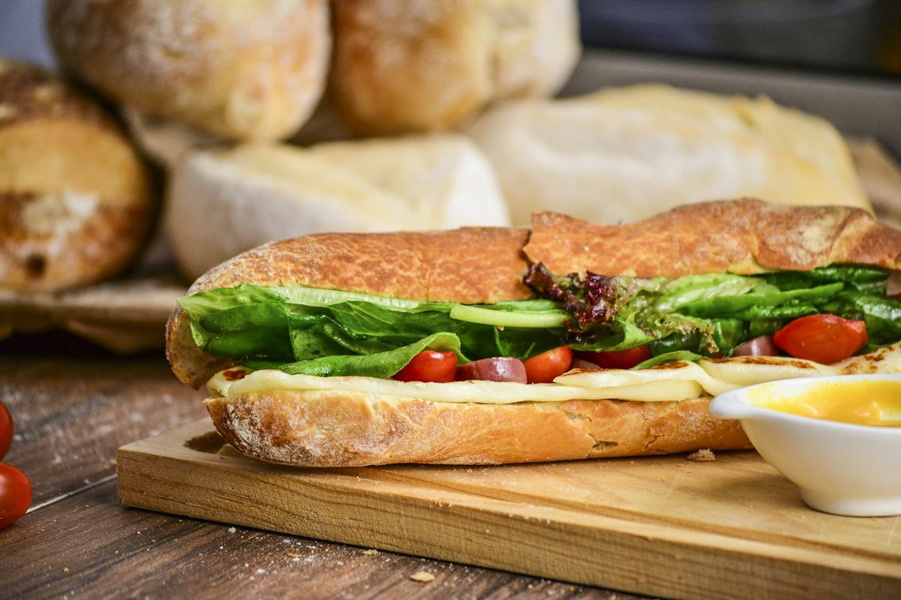
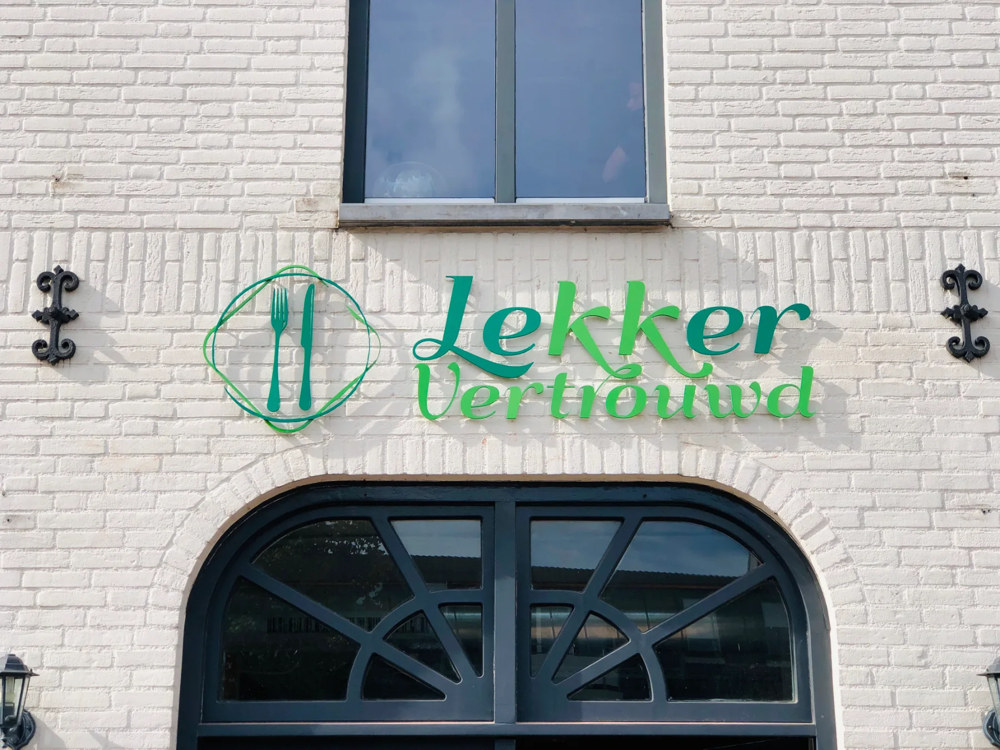

Feestjes & partijen
Onze locatie is ook prima geschikt voor al uw feestjes en partijen. Of het nou een verjaardagsfeestje is of een bedrijfsborrel, wij kunnen het allemaal.
Vraag naar de mogelijkhedenEen heerlijke lunch, met zorg gemaakt en geserveerd door onze jongens en meiden. Sinds oktober 2013 aan de Molenstraat.
Maandag t/m zaterdag 09.00 tot 16.00 uur


Wij nemen u graag mee naar oktober 2013, toen het voor ons allemaal begon: het verzorgen van een heerlijke lunch met de hulp van jongens en meiden met een beperking.
Waar ze in onze samenleving vaak tegen problemen aan lopen, helpen wij ze hier om een leuke baan te vinden en meer voldoening uit het leven te halen. Verstandelijk beperkt zijn is niet altijd even makkelijk. Het is moeilijker om te werken en een geschikte baan te vinden.
En daarom zijn wij zo trots op ze: dat ze hier gewoon lekker zichzelf kunnen zijn en mee kunnen draaien in onze maatschappij.
Gezellig bijkletsen met je familie of vrienden en vriendinnen, terwijl je geniet van een keur aan huisgemaakte hapjes.
Allemaal huisgemaakt, met daarbij natuurlijk onbeperkt thee.
21,70 per persoon
Bel om te reserverenLekker Vertrouwd ook thuis of op het werk. Bestel online, of neem contact met ons op voor meer informatie over bezorgen.
Onze locatie is ook prima geschikt voor al uw feestjes en partijen. Of het nou een verjaardagsfeestje is of een bedrijfsborrel, wij kunnen het allemaal.
Vraag naar de mogelijkhedenMet onze Piggy-spaarkaart spaart u voor lekkere kortingen. Voor elke euro die u besteedt krijgt u een punt. Voor 250 punten heeft u al een gratis high tea!
Altijd leuk om te geven! Bij ons kunt u terecht voor cadeaukaarten, verkrijgbaar vanaf € 5,00.
Bekijk de cadeaukaart| Maandag | 09.00 tot 16.00 |
|---|---|
| Dinsdag | 09.00 tot 16.00 |
| Woensdag | 09.00 tot 16.00 |
| Donderdag | 09.00 tot 16.00 |
| Vrijdag | 09.00 tot 16.00 |
| Zaterdag | 09.00 tot 16.00 |
| Zondag | Gesloten |
Wilt u een tafeltje reserveren? Bel of mail ons.

Schrijf u in voor onze nieuwsbrief en hoor als eerste over de laatste acties en nieuwtjes.